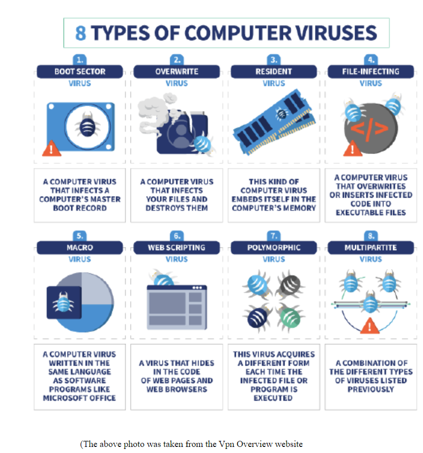
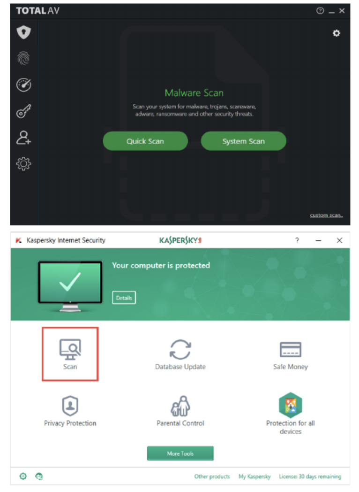
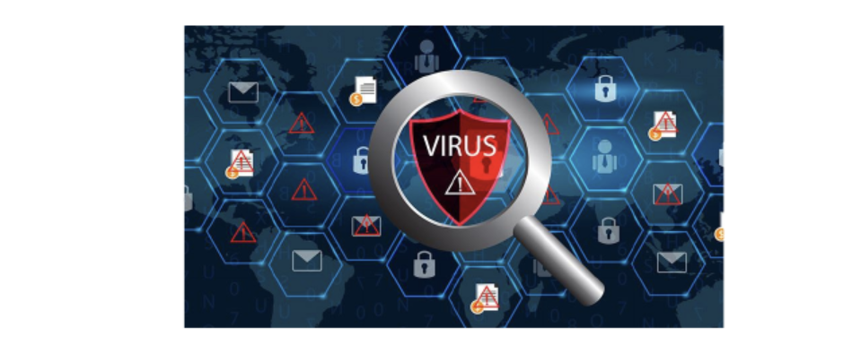
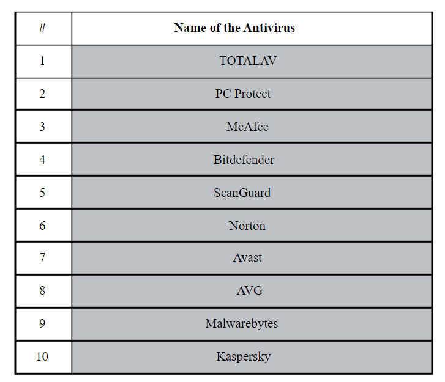

Introduction to AntiViruses:
In 1971, the first computer virus known as the Creeper spread to PDP-10 mainframe computers manufactured by Digital Equipment Corporation (DEC). To prevent this infection, An American computer programmer Ray Tomlinson developed something called the Reaper, which was a program to delete the Creeper virus. Although the Reaper was not an actual antivirus, it was the start of the antivirus era.
At the very beginning of this research, it’s sufficient to define some of the definitions that I want to use through this research paper.
First, I want to define what a virus is in computers, in other words, what do we mean by calling something a virus?
Second, I want to define what an antivirus is, in other words, what do we mean by calling something as an antivirus?
Third, I want to define what is malware or malicious software in computers, in other words, what do we mean by calling something malware/malicious software? A technical writer, Ben Lutkevich, defined malware or malicious software as the following term:
With the definitions that I mentioned above, I think we are ready to go into the depth of viruses, antiviruses, and malicious softwares. Of course, I will try to keep it clear to help you understand better.
The reason of using antiviruses:
You may have this question on the back of your mind, what is the point of using antiviruses? I’m here to explain that. These days, most people are using the internet. Of course, using an online world via the internet can be so cool; but it actually can be threatening in some cases. For instance, when you are buying some stuff from Amazon, your bank information can be in danger.What will happen if somebody gets access to your bank information? Of course we all know that. They can steal all our money.
As another example which is related to our topic, antivirus, have you ever installed an application which made your computer slow? Personally, I experienced that many times in my life. I can remember that when I was 11, I installed a game which made my laptop very slow; I was scared of that and I asked my cousin about that, who is a senior computer programmer; He told me that there is a possibility that your computer got infected by a virus, you have to install an antivirus to find the virus and delete it.
Now, it’s time to answer the following question:
Why do I need to use antiviruses?
As you all may get infected by a computer virus while you are surfing on the internet, downloading documents from the websites, or opening a link which is sent by other people, it is better for you to be ready to prevent these viruses from infecting your computers. The easiest way to be prepared for that is to install an antivirus, which will be taking care of your computer. As I explained the advantages of using an antivirus above, you may be convinced that it is necessary and sufficient to use an antivirus.
Different kind of viruses:
At this point, it is worth mentioning what kind of viruses do we have?
Please take a look at the picture that I attached above. By considering that, you will have the basic understanding of each type of computer virus, which is completely enough.
Now, it’s time to introduce different kinds of antiviruses. Of course, there are multiple types of antiviruses that we can use to protect our computer from viruses, malwares and malicious softwares. Let’s take a look at it.
Diferent kind of antiviruses:
According to softwarelab.org, Antivirus programs can be divided into the following categories:
At this point, I want to briefly discuss each type of the antivirus.
Security Software Suites:
Cloud-Based Antivirus Software:
Based on the things that I mentioned above, you can choose which antivirus would be suitable for you; although I would recommend that you ignore the standalone antivirus, and get an antivirus which is a cloud-based or security software suite. By considering these kinds of antivirus, I want to discuss how we can use antiviruses. Should we have a great knowledge about computers to be able to use antivirus?
How can we use antiviruses:
By considering the photos that I attached above, you can figure out that using an antivirus is pretty painless and uncomplicated. All the antiviruses have the “scan” button on their application, which you can simply push. Once you push the button, the scan will start shortly. After the termination of the scan, the results of the scan will be shown up, you can delete them from your system pretty easily, only with pushing the delete button.
By considering all the things that I have explained until now, you are more than ready to hear about the functionality of an antivirus in a pretty simple way.
How do Antiviruses work?
According to the Dotnek website, antivirus monitors all the changes that occur in the files. Based on the suspicious cases, antivirus can notice the presence of threatening factors and send warning messages to the user, the antivirus works quickly and detects the threats, and it destroys the threats.
According to the Verizon website, most antivirus programs will use the following detection devices:
known suspicious file structures. When the program finds the file which contains the virus, it will quarantine it and mark it for deletion. Also, it makes it inaccessible
As a conclusion for the functionality of the antivirus, an antivirus software will search for the viruses, it will detect them, and then it will remove them from the system. Of course, the functionality of an antivirus is way more complicated than this, but as a non-computer savvy individual, this explanation is appropriate for you to have the basic understanding of the functionality of an antivirus.
At this moment, it’s time to talk about which antivirus is appropriate to get the maximum protection. Of course, you all have this question. It is worth mentioning that our recommendation is not the best possible choice, you can search about it and find your favorite antivirus which meets your requirements in a way that satisfies you and matches with your ideal price range.
Which Antivirus should we use:
According to the Antivirus Software Guide website, The best 10 antiviruses in 2022 are the following antiviruses:
Don’t forget to consider that a free antivirus might not be able to fully protect your system from malwares and viruses. It is worth knowing that best antiviruses can be available with a great discount which makes the price reasonable. Some of the antiviruses will protect your smartphones, smart television, and tablets as well. Furthermore, don’t forget to consider the effectiveness against cyber threats. Consider the performance of it and the features which are provided by an antivirus.
These days, antivirus’s market is extremely competitive. There are a bunch of famous antivirus companies in the market. Of course, choosing an appropriate antivirus can be a hard decision to make.
At the end of the day, I want to mention that you are the best person who can protect yourself from any suspicious activity and malwares. Because it does not matter how good your antivirus is, if you are not careful and responsible for your personal data and information, stealing your information would be actually possible.
By the way, I want to make a quiz for you to help you understand better. Also, you can always review the information that we covered in this research paper by doing this quiz. Your grade will be reported to you as soon as you finish answering the question.
Quiz Link: